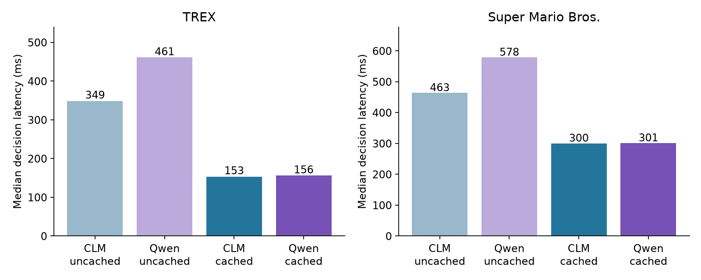
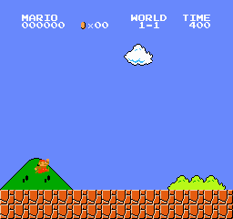
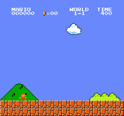
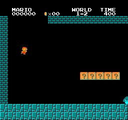
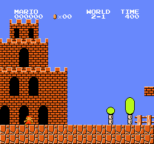

Follow-up: a better cached Qwen prompt now survives a held-out 30-second T-Rex run with about 3% additional decision latency. Read the prompt-tuning experiment. The results below retain the original prompts.
Qwen3-8B BF16 · Apple M4 Max · 3 October 2026 · actual NES Mario and upstream T-Rex physics
Both models reuse their fixed prefixes. Qwen caches rules and action definitions; CLM caches rules and action embeddings. Every changing state is processed afresh. This is one-token greedy constrained selection, with no generation loop, thinking tokens, planner hints, safety shield, or whole-request memoization.
Caching removes almost all of Qwen’s measured latency disadvantage. Cached Qwen/CLM paired median latency ratios are 1.011 on T-Rex and 1.010 on Mario. Game quality remains poor: neither model finished any test episode successfully. Qwen made forward progress in Mario, while CLM stalled; CLM survived longer in T-Rex.

| Game | Method | Prefix | States | Median ms | 95th percentile ms |
|---|---|---|---|---|---|
| trex | clm | uncached | 80 | 348.7 | 413.7 |
| trex | clm | cached | 80 | 153.4 | 227.8 |
| trex | qwen | uncached | 80 | 460.7 | 479.9 |
| trex | qwen | cached | 80 | 155.7 | 236.3 |
| mario | clm | uncached | 56 | 463.4 | 524.4 |
| mario | clm | cached | 56 | 299.8 | 323.4 |
| mario | qwen | uncached | 56 | 578.2 | 607.9 |
| mario | qwen | cached | 56 | 300.6 | 328.5 |
136 frozen states: 80 T-Rex states from five planner trajectories and 56 Mario states from three heuristic trajectories. Each is evaluated under all four conditions, with deterministic randomized order. Latency includes tokenization, cache branching, model evaluation, head scoring, and synchronized result extraction. It excludes environment observation extraction and one-time setup. Uncached CLM still retains its fixed action embeddings: only its state prefix is recomputed.
| Game | Method | Median total | Cached prefix | Median newly processed |
|---|---|---|---|---|
| trex | clm | 306.5 | 191 | 115.5 |
| trex | qwen | 385.5 | 262 | 123.5 |
| mario | clm | 409.0 | 211 | 198.0 |
| mario | qwen | 518.0 | 312 | 206.0 |
Cached tokens remain in attention; caching avoids recomputing their transformer states, but does not make attention to them free. The same BF16 backbone, MLX implementation, and process-local 24 GiB wired-memory limit are used for both methods.
| Game | Seed / level | Method | Game time | Score / furthest x | Outcome | Decisions |
|---|---|---|---|---|---|---|
| T-Rex | 0 | clm | 8.42 s | 74 | crashed | 85 |
| T-Rex | 0 | qwen | 5.55 s | 46 | crashed | 56 |
| T-Rex | 1 | qwen | 5.55 s | 46 | crashed | 56 |
| T-Rex | 1 | clm | 6.63 s | 56 | crashed | 67 |
| T-Rex | 2 | clm | 9.10 s | 80 | crashed | 91 |
| T-Rex | 2 | qwen | 5.55 s | 46 | crashed | 56 |
| T-Rex | 3 | qwen | 5.55 s | 46 | crashed | 56 |
| T-Rex | 3 | clm | 10.40 s | 93 | crashed | 104 |
| T-Rex | 4 | clm | 7.47 s | 64 | crashed | 75 |
| T-Rex | 4 | qwen | 5.55 s | 46 | crashed | 56 |
| Mario | 1-1 | clm | 5.00 s | x=40 | stalled | 25 |
| Mario | 1-1 | qwen | 2.67 s | x=296 | died | 14 |
| Mario | 1-2 | qwen | 1.57 s | x=180 | died | 8 |
| Mario | 1-2 | clm | 5.00 s | x=40 | stalled | 25 |
| Mario | 2-1 | clm | 5.00 s | x=40 | stalled | 25 |
| Mario | 2-1 | qwen | 3.80 s | x=307 | died | 19 |
Five T-Rex seeds (0–4), up to 30 simulated seconds; three Mario levels (1-1, 1-2, 2-1), up to 30 seconds, stopping after five seconds without new maximum x. T-Rex acts every 6 frames (100 ms); Mario every 12 (200 ms). The environment is paused during inference: these are lockstep action-quality tests, not claims of successful real-time deployment. Mario is deterministic, so repeating the identical start would not create independent trials.
| Method | Subset | Planner-safe choices |
|---|---|---|
| clm | all | 79/80 |
| clm | critical | 21/22 |
| clm | forced | 0/1 |
| qwen | all | 79/80 |
| qwen | critical | 21/22 |
| qwen | forced | 0/1 |
The planner evaluates whether an action permits future survival under its physics/search horizon. “Critical” excludes states where all three actions are safe; “forced” has exactly one safe action. The fixed sample contains only one forced state, so the overall safety percentage is a weak measure of game skill. Closed-loop survival is the stronger test. Planner results were used only for evaluation and generating reference trajectories, never supplied to either model.
After seeing the main results, I reran Qwen with the same fixed rules/actions and changing state, removed the chat template, and appended Answer:. It still used one bare constrained letter and a cached prefix. This was an exploratory check, not a newly selected primary result. It did not improve play: all five T-Rex runs again crashed at 5.55 seconds; all three Mario runs stalled at the starting x=40. Later-run latency measurements are not interleaved with the primary comparison.
| Game | Raw Qwen median ms | Matched states |
|---|---|---|
| trex | 152.9 | 80 |
| mario | 298.8 | 56 |
Exact raw prompts · Raw matched predictions · Raw episode traces
| Game | Seed / level | Reference | Game time | Score / x | Outcome |
|---|---|---|---|---|---|
| trex | 0 | planner | 30.00 s | 305 | survived |
| trex | 1 | planner | 30.00 s | 305 | survived |
| trex | 2 | planner | 30.00 s | 305 | survived |
| trex | 3 | planner | 30.00 s | 305 | survived |
| trex | 4 | planner | 30.00 s | 305 | survived |
| mario | 1-1 | heuristic | 11.80 s | 1226 | died |
| mario | 1-2 | heuristic | 1.57 s | 180 | died |
| mario | 2-1 | heuristic | 8.63 s | 834 | died |
The Mario reference is a simple jump heuristic, not an optimal policy or accuracy oracle. Mario observations are structured prose from visible RAM terrain/enemy geometry, with current motion and button state. T-Rex observations use visible engine geometry. Neither model receives images; this tests decisions given symbolic state, not visual perception.
| Game | Method | Prefix setup ms | Action embedding setup ms |
|---|---|---|---|
| trex | qwen | 358 | 0 |
| trex | clm | 251 | 180 |
| mario | qwen | 340 | 0 |
| mario | clm | 298 | 260 |
Setup excludes model loading. These single cold measurements are descriptive rather than stable latency estimates. Qwen caches its instruction/action prefix once; CLM separately caches its rules prefix and each action vector.
{
"cache_equivalence": {
"trex_clm_cached_over_uncached": {
"median_paired_ratio": 0.44398857158870286,
"bootstrap95": [
0.44290285100290505,
0.44550954023437256
],
"choice_agreement": 79,
"n": 80,
"max_probability_difference": 0.026708006858825684
},
"trex_qwen_cached_over_uncached": {
"median_paired_ratio": 0.3352185097416306,
"bootstrap95": [
0.33335340845211375,
0.374110158611476
],
"choice_agreement": 80,
"n": 80,
"max_probability_difference": 0.030198633670806885
},
"trex_cached_qwen_over_clm": {
"median_paired_ratio": 1.010595598864191,
"bootstrap95": [
1.008730371646474,
1.01339196142127
]
},
"mario_clm_cached_over_uncached": {
"median_paired_ratio": 0.627414985024884,
"bootstrap95": [
0.5739705592818022,
0.6374467785398927
],
"choice_agreement": 56,
"n": 56,
"max_probability_difference": 0.013484865427017212
},
"mario_qwen_cached_over_uncached": {
"median_paired_ratio": 0.5130768424174255,
"bootstrap95": [
0.4827860193377804,
0.5182515994961552
],
"choice_agreement": 54,
"n": 56,
"max_probability_difference": 0.11334294080734253
},
"mario_cached_qwen_over_clm": {
"median_paired_ratio": 1.0100536032371383,
"bootstrap95": [
1.0060436604739738,
1.0136624940807788
]
}
},
"output_head": {
"full_vocab_choice_agreement": 10,
"n": 10,
"label_ids": {
"trex": [
32,
33,
34
],
"mario": [
32,
33,
34,
35,
36,
37
]
}
},
"CLM_head_max_abs_error": {
"state": 3.8743019104003906e-07,
"action": 3.8743019104003906e-07
}
}Qwen uses the original LM-head rows for the allowed letters (A–C or A–F), equivalent to masking all other tokens before greedy decoding. Ten checks against the full-vocabulary LM head must choose the same action. Cached and uncached BF16 computations can differ slightly because matrix shapes and reduction order change; the agreement and largest probability differences above disclose this.
[
{
"role": "system",
"content": "You control the Chrome T-Rex runner. Survive as long as possible. The dinosaur runs right automatically, while obstacles move left. A decision lasts 6 frames (100 ms) at 60 frames per second. All distances are pixels. The dinosaur left edge is x=50 and its standing width is 44, height 47; ground standing top y=93. Larger y means lower. Cacti must be jumped over; low birds can be jumped, head-height birds can be ducked under, and high birds can pass overhead. Jump only when an obstacle is sufficiently near; an early jump can land on the obstacle. A jump begins with about -10.6 pixels/frame vertical velocity and gravity adds 0.6 each frame. A new jump can start only on the ground. Duck in the air accelerates descent. The state contains observable geometry, not a recommended action.\n\nChoose exactly one action letter.\nA: run: Run forward on the ground without jumping or ducking. Release duck if held.\nB: jump: Jump over an obstacle. If already airborne, continue the current jump without starting another.\nC: duck: Duck under a bird; if airborne, drop rapidly toward the ground."
},
{
"role": "user",
"content": "Dinosaur top_y=15.0, vertical velocity=4.6, airborne=True, ducking=False, rapid descent=False. Running speed=7.14 pixels/frame. Previous held action=run.\nVisible obstacles: cactusSmall, left_x=22, top_y=105, width=51, height=35, leftward speed=7.14, gap from dinosaur front=-72.\nFrame 1140; score=182.\n\nWhich action should the dinosaur take now to survive?"
}
]You control the Chrome T-Rex runner. Survive as long as possible. The dinosaur runs right automatically, while obstacles move left. A decision lasts 6 frames (100 ms) at 60 frames per second. All distances are pixels. The dinosaur left edge is x=50 and its standing width is 44, height 47; ground standing top y=93. Larger y means lower. Cacti must be jumped over; low birds can be jumped, head-height birds can be ducked under, and high birds can pass overhead. Jump only when an obstacle is sufficiently near; an early jump can land on the obstacle. A jump begins with about -10.6 pixels/frame vertical velocity and gravity adds 0.6 each frame. A new jump can start only on the ground. Duck in the air accelerates descent. The state contains observable geometry, not a recommended action. Current state: Dinosaur top_y=15.0, vertical velocity=4.6, airborne=True, ducking=False, rapid descent=False. Running speed=7.14 pixels/frame. Previous held action=run. Visible obstacles: cactusSmall, left_x=22, top_y=105, width=51, height=35, leftward speed=7.14, gap from dinosaur front=-72. Frame 1140; score=182. Which action should the dinosaur take now to survive?
{
"run": "Run forward on the ground without jumping or ducking. Release duck if held.",
"jump": "Jump over an obstacle. If already airborne, continue the current jump without starting another.",
"duck": "Duck under a bird; if airborne, drop rapidly toward the ground."
}[
{
"role": "system",
"content": "You control Super Mario Bros. Reach the flag to the right without dying. Each decision holds its buttons for 12 frames (200 ms) at 60 frames per second. Observations use world pixel coordinates; x increases right, y increases downward. Mario is about 16 pixels wide. Feet_y is the bottom of his body. Grounded means standing on a solid surface. Solid terrain rectangles can be floor, pipes, bricks, or blocks. Missing floor is a pit: falling into it is fatal. Jump over enemies, pits, and tall obstacles. Enemies can be stomped by landing on them from above; side contact is dangerous. Walk right on clear floor; use jumps when needed for progress or safety. Holding jump while rising increases jump height; releasing jump shortens the jump. Jump must be released between separate jumps: continuing to hold it after landing does not start a new jump. Horizontal momentum persists briefly after release. Negative vertical velocity means rising. The state gives only currently visible geometry and current motion.\n\nChoose exactly one action letter.\nA: wait: Release all buttons; remain still or coast with current momentum.\nB: right: Walk right with jump released.\nC: left: Walk left with jump released.\nD: jump: Hold jump without a horizontal direction.\nE: jump_right: Hold jump and right to jump forward or continue an airborne jump to the right.\nF: jump_left: Hold jump and left to jump backward or continue an airborne jump to the left."
},
{
"role": "user",
"content": "Mario x=163, feet_y=208, size=small, grounded=True, horizontal velocity=1.75 pixels/frame, vertical velocity=0 pixels/frame. Previous buttons: right.\nVisible solid terrain rectangles (world pixels): x=144..304, y=208..240; x=256..272, y=144..160. Empty space between rectangles is air, including pits where no floor exists.\nVisible enemies: none.\nFrame 84; furthest x reached=163.\n\nWhich action should Mario take now to reach the flag safely?"
}
]You control Super Mario Bros. Reach the flag to the right without dying. Each decision holds its buttons for 12 frames (200 ms) at 60 frames per second. Observations use world pixel coordinates; x increases right, y increases downward. Mario is about 16 pixels wide. Feet_y is the bottom of his body. Grounded means standing on a solid surface. Solid terrain rectangles can be floor, pipes, bricks, or blocks. Missing floor is a pit: falling into it is fatal. Jump over enemies, pits, and tall obstacles. Enemies can be stomped by landing on them from above; side contact is dangerous. Walk right on clear floor; use jumps when needed for progress or safety. Holding jump while rising increases jump height; releasing jump shortens the jump. Jump must be released between separate jumps: continuing to hold it after landing does not start a new jump. Horizontal momentum persists briefly after release. Negative vertical velocity means rising. The state gives only currently visible geometry and current motion. Current state: Mario x=163, feet_y=208, size=small, grounded=True, horizontal velocity=1.75 pixels/frame, vertical velocity=0 pixels/frame. Previous buttons: right. Visible solid terrain rectangles (world pixels): x=144..304, y=208..240; x=256..272, y=144..160. Empty space between rectangles is air, including pits where no floor exists. Visible enemies: none. Frame 84; furthest x reached=163. Which action should Mario take now to reach the flag safely?
{
"wait": "Release all buttons; remain still or coast with current momentum.",
"right": "Walk right with jump released.",
"left": "Walk left with jump released.",
"jump": "Hold jump without a horizontal direction.",
"jump_right": "Hold jump and right to jump forward or continue an airborne jump to the right.",
"jump_left": "Hold jump and left to jump backward or continue an airborne jump to the left."
}Actual emulator frames at 10 frames per second, shown at simulated game speed. Inference waiting time is omitted.




Run .venv/bin/python -u experiments/games/bench.py, then .venv/bin/python -u experiments/games/raw_check.py, then .venv/bin/python experiments/games/analyze.py. The NES worker uses the separate .venv-games environment and the pinned package list in experiments/games/requirements-games.txt. Outputs are resumable; use a fresh output directory for an independent repeat.
Raw data: summary, metadata, frozen states, matched predictions, complete episode decisions, head audits. Sources: NES environment, CLM repository and T-Rex engine.